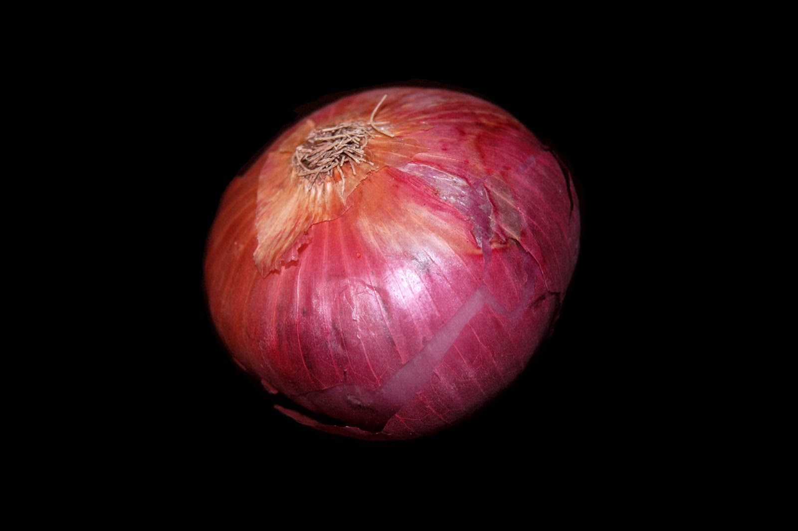

Onion

- Onions are nutrient-dense, meaning they’re low in calories but high in vitamins and minerals.
- Onions are members of the Allium genus of flowering plants that also includes garlic, shallots, leeks and chives.
- These vegetables contain various vitamins, minerals and potent plant compounds that have been shown to promote health in many ways.
- In fact, the medicinal properties of onions have been recognized since ancient times, when they were used to treat ailments like headaches, heart disease and mouth sores.
- One medium onion has just 44 calories but delivers a considerable dose of vitamins, minerals and fiber.
- This vegetable is particularly high in vitamin C, a nutrient involved in regulating immune health, collagen production, tissue repair and iron absorption.
- Vitamin C also acts as a powerful antioxidant in your body, protecting your cells against damage caused by unstable molecules called free radicals.
- Onions are also rich in B vitamins, including folate (B9) and pyridoxine (B6) — which play key roles in metabolism, red blood cell production and nerve function.
- They’re a good source of potassium, a mineral in which many people are lacking.
- Onions contain antioxidants and compounds that fight inflammation, decrease triglycerides and reduce cholesterol levels — all of which may lower heart disease risk.
- Their potent anti-inflammatory properties may also help reduce high blood pressure and protect against blood clots.
- Onions have also been shown to decrease cholesterol levels.